Ham Fair 2003
Ham Fair 2002
Ham Fair 2001
Ham Fair 2000
Ham Fair 1999
 |
Flash Newsへ |
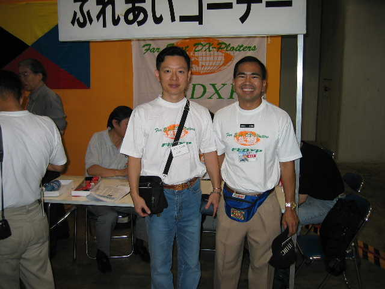
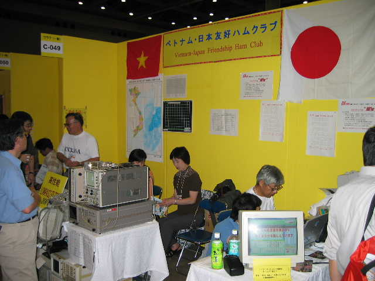
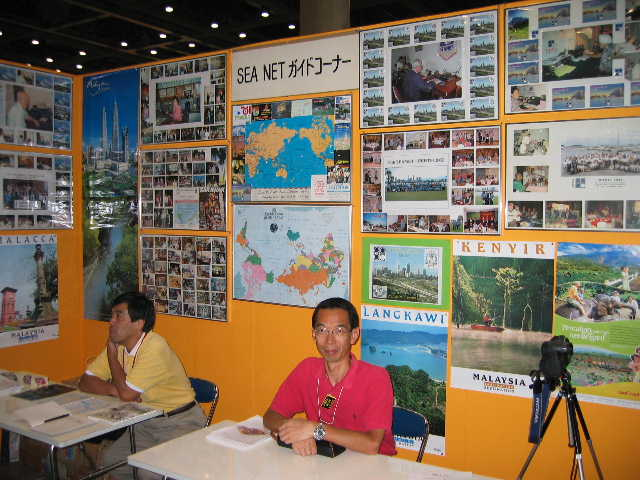
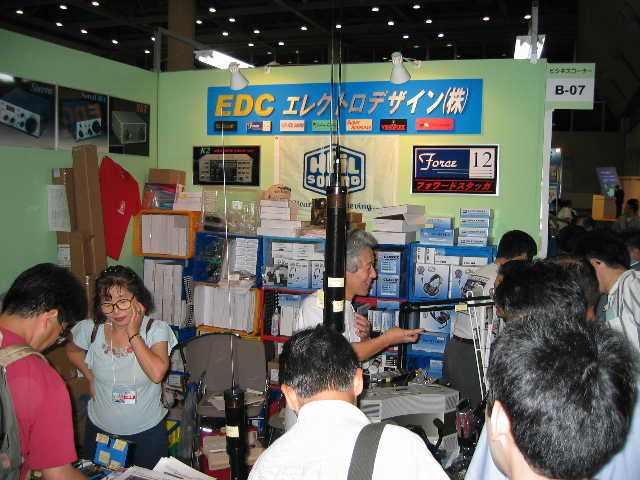
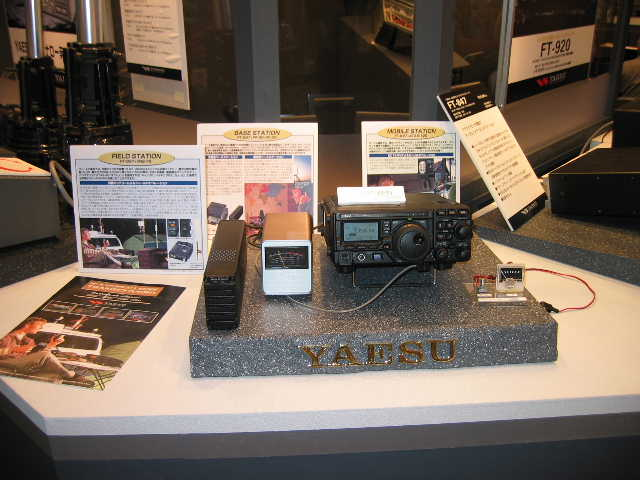
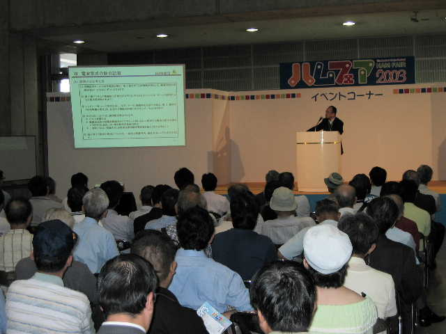
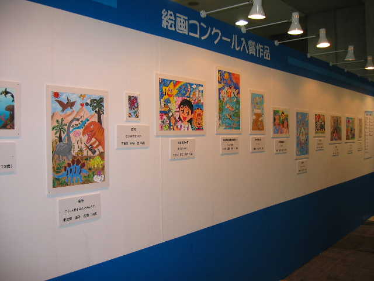
|
8月23日(土)の夕方は海外から多くのゲストを迎えてハムフェアDX-ミーティングがTFT東京ファッションタウン9階で開催された 第1部のDXショートセミナーでは、JR2KDN・吉田さんによる「VP6DIA Ducie島 DX-Peditionの報告」がスライドを交えて紹介された。 第2部の「DXパーティー」は、会場を移して約180人の参加者で賑わった。 JK1OPL・小野さんの総合司会で始まったパーティーは、FEDXP会長のJA1BRK・米村さんの開会の挨拶の後、全員で乾杯！。 続いて、出席した海外からのゲストの自己紹介が行なわれた。 ゲストはN7NG、K1GA、HL1IWD、DU1EV、G3SXW、G3TXF、VP6MWの他、 海外からアクティブにQRVしていた9G5DX(JH8PHT/1)、JA6WFM/HR3各局。 |
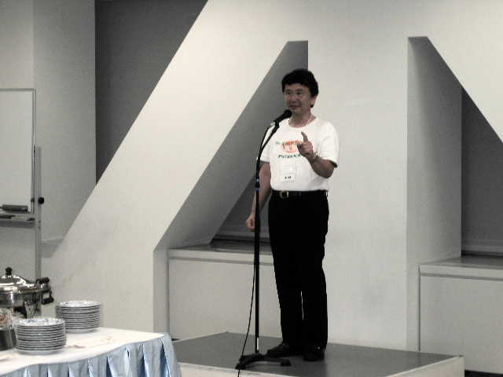
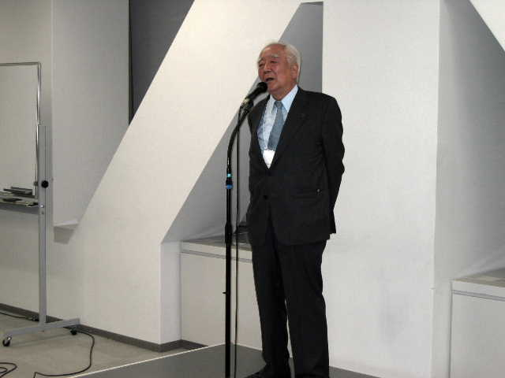
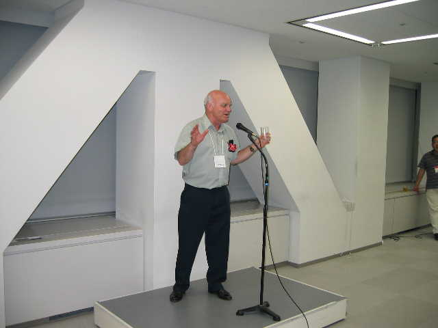
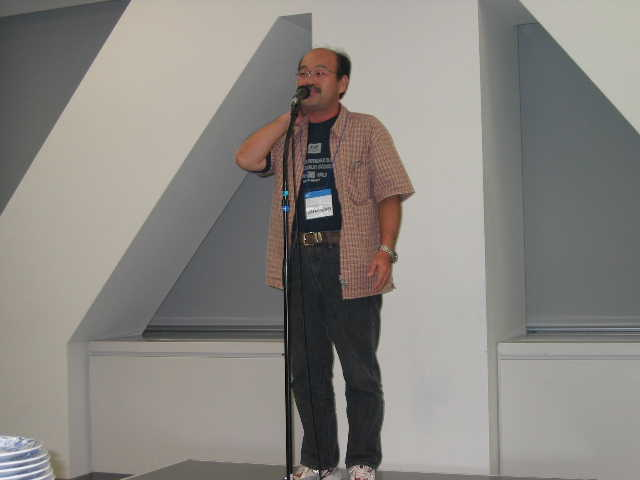
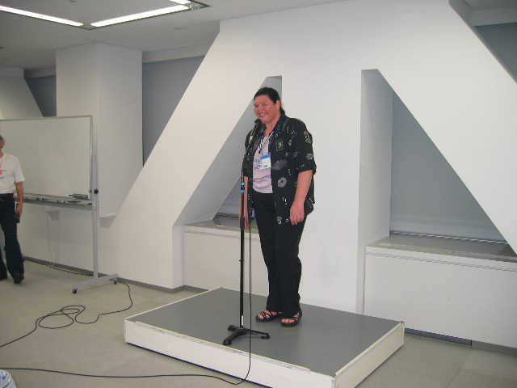
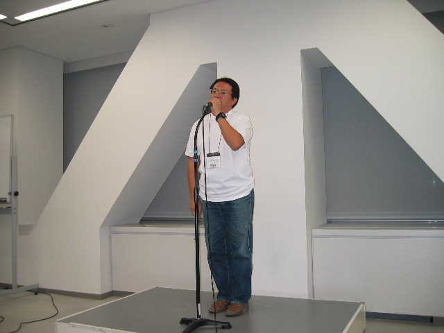
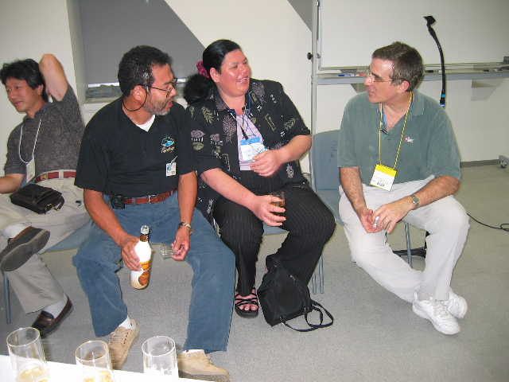
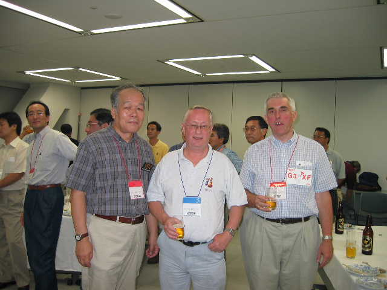
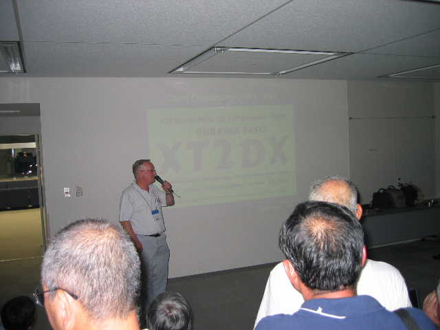
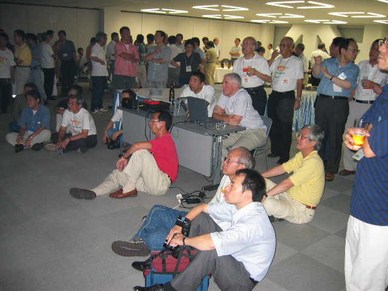
|
Flash Newsへ |